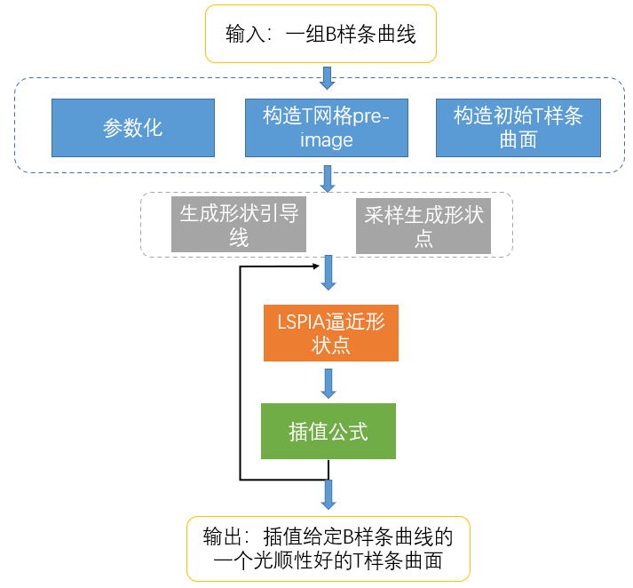

PiaNasriMethod&PiaMinJaeMethod
相关文件：
- PiaMethod.h
- PiaMethod.cpp
- PiaNasriMethod.h
- PiaNasriMethod.cpp
- PiaMinJaeMethod.h
- PiaMinJaeMethod.cpp
本文提出的基于引导线和LSPIA的T样条曲面蒙皮方法的主要步骤如下图所示： 
对上述步骤进行抽象得到了PiaMethod基类，该基类由于一开始的设计问题，实现的是通过局部加细拟合给定的曲线，与T样条曲面蒙皮无关，但是继承PiaMethod的两个类PiaNasriMethod, PiaMinJaeMethod是基于引导线的T样条曲面蒙皮方法的具体实现。
PiaNasriMethod
具体代码如下：
#ifndef PIANASRIMETHOD_H
#define PIANASRIMETHOD_H
#include "PiaMethod.h"
#include "NURBSSurface.h"
#include <igl/point_mesh_squared_distance.h>
class PiaNasriMethod :public PiaMethod {
public:
PiaNasriMethod(const vector<NURBSCurve>& _curves, int _maxIterNum = 100, double _eps = 1e-5)
:PiaMethod(_curves, _maxIterNum, _eps) {
}
// 设置辅助点
void set_helper_points(const MatrixXd& points) {
helper_points.resize(points.rows());
for (int i = 0; i < points.rows(); i++) {
helper_points[i].origin.fromVectorXd(points.row(i));
}
}
// 将辅助点参数化
std::tuple<double, double, double, double> param_helper_points();
void init() override; // 根据NUUBSCurve初始化T-preimage
void insert() override; // 按一定规则在误差大的地方插入节点，局部加细
void calculate() override; // 计算流程
public:
void sample_fitPoints_1();
void sample_fitPoints_2(); // 生成引导线，并采样得到数据点
void sample_fitPoints() override;
void pia() override;
private:
vector<FitPoint2D> curve_points;
vector<FitPoint2D> inter_points;
vector<FitPoint2D> helper_points;
};
#endif // !PIANASRIMETHOD_H
calculate中的计算流程如下：
void PiaNasriMethod::calculate()
{
parameterize();
init();
insert();
sample_fitPoints_2(); // 生成引导线，并采样得到数据点
fitPoints = curve_points;
fitPoints.insert(fitPoints.end(), inter_points.begin(), inter_points.end());
update();
fit();
cout << error << " " << "update" << endl;
// lspia逼近引导线上采样得到的数据点
fit();
pia();
// 更新控制点坐标满足插值性
update();
cout << error << " " << "update" << endl;
for (int i = 0; i < 19; i++) {
fit();
pia();
update();
fit();
cout << error << " " << "update" << endl;
}
}
各个步骤的具体实现见代码，PiaMinJaeMethod与PiaNasriMethod类似。
使用方法
main.cpp中包含了一些基于引导线的T样条曲面蒙皮方法的测试用例，可参照使用。
// main.cpp
Test::test_circle_skinning();
Test::test_venus_skinning();
Test::test_venus_skinning_helper_points();
Test::test_Bsurface_skinning();
Test::test_chess_skinning();
Test::test_ring_skinning();
Test::test_helicoidal_skinning();
Test::test_bonnet_skinning();
Test::test_door_skinning();
Test::test_face_skinning();